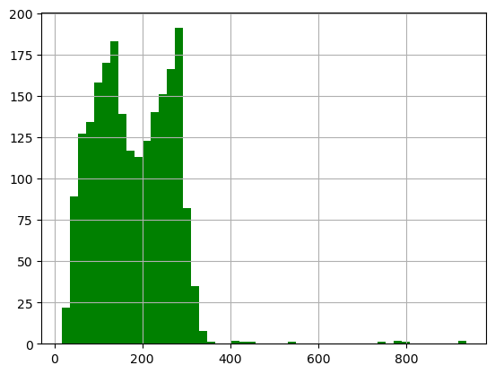
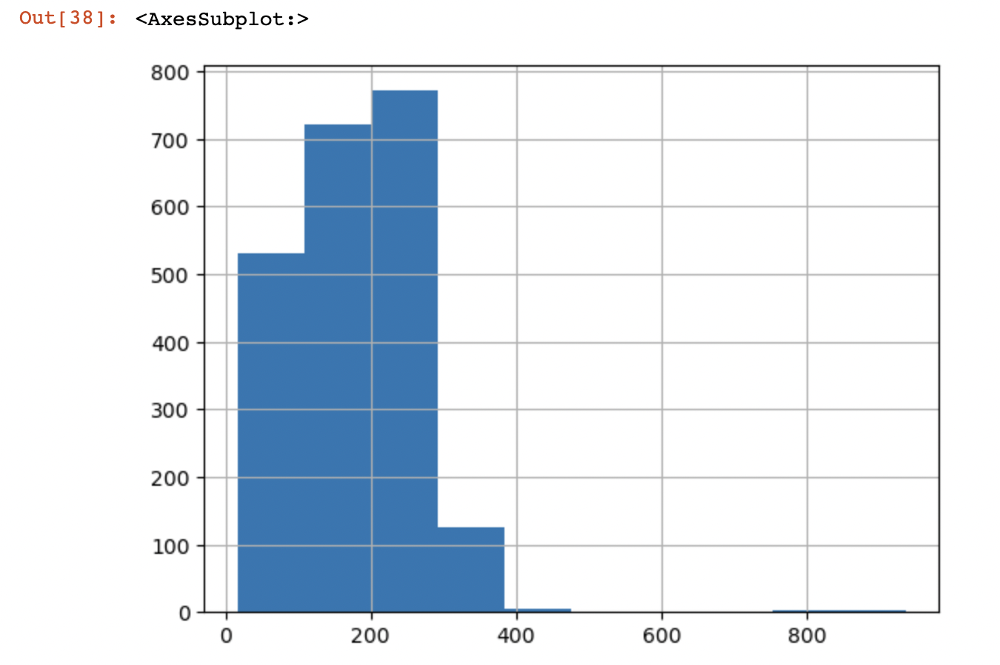
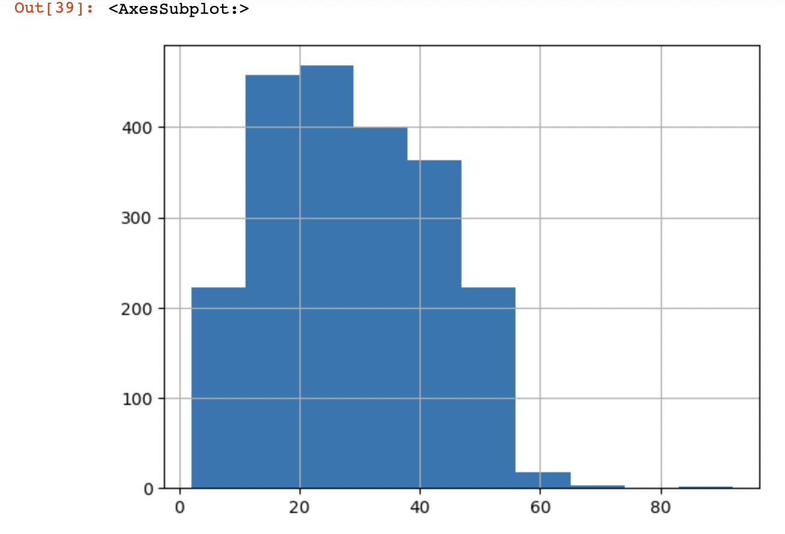
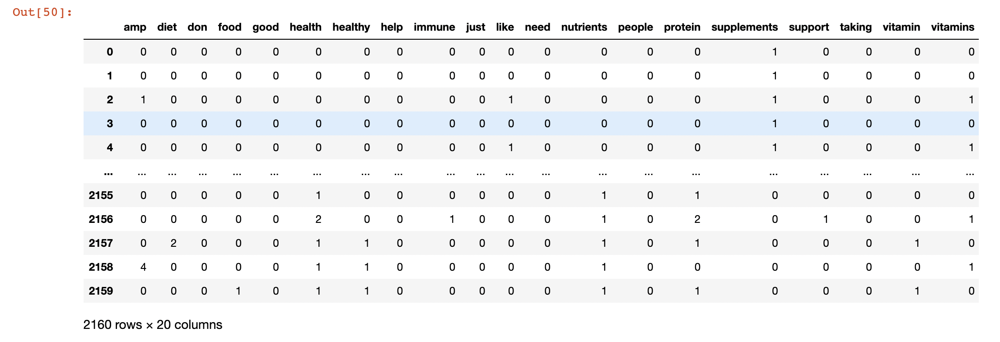
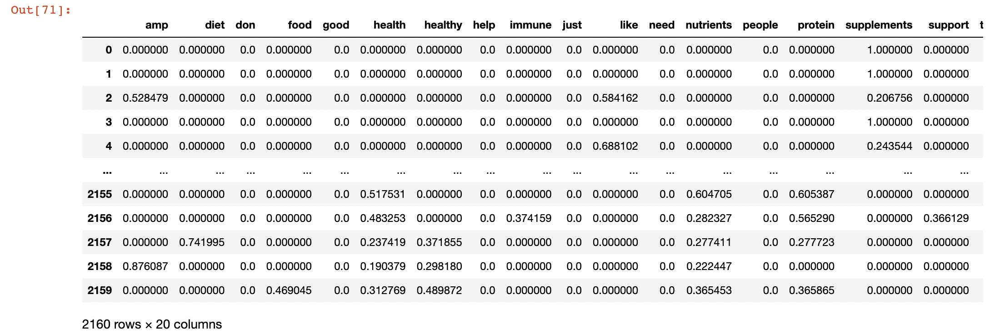

With the rise of the health and wellness industry, there is a growing number of people looking to supplement their diets with various vitamins, minerals, and other substances. However, not all supplements are created equal and some can even be harmful if not used properly. It is essential to have accurate and reliable information on the benefits and risks of supplements to make informed decisions about one's health. This topic matters because it affects the health and quality of life of individuals and communities, and it is important for people to have access to accurate information to make informed choices about their health.
Supplements are a popular addition to many people's diets, with the goal of enhancing their health and physical performance. While some supplements have been shown to have specific benefits, the overall effect of supplements on health is a topic of ongoing scientific research and debate. It is important to note that supplements should not be used as a replacement for a balanced diet, and it is always recommended to consult with a healthcare professional before starting a supplement regimen.
People are looking for ways to improve their health and prevent chronic conditions, and supplements can seem like an attractive solution. However, it is important to have accurate information about the benefits and risks of supplements to make informed decisions. Another reason why this topic matters is the growing health and wellness industry. With the rise of this industry, there has been an increase in the number of supplements available on the market, some of which are of questionable quality and effectiveness. It is crucial for people to have access to reliable information to ensure that they are purchasing safe and effective supplements.
Supplement intake affects a variety of people, including: Individuals: The primary group affected by supplement intake is individuals who choose to take supplements for various reasons, such as to improve their health, fill nutritional gaps, or enhance physical performance. Athletes and fitness enthusiasts: Many athletes and fitness enthusiasts use supplements as a way to support their training and performance goals. However, it is important for these individuals to understand the potential benefits and risks of the supplements they take. Children: Some children may use supplements, often with the goal of improving their overall health or addressing specific health conditions. Healthcare providers: Healthcare providers, such as doctors and dietitians, may be affected by supplement intake as they advise patients on the use of supplements and monitor the potential impact of supplements on their health.
There are several initiatives and actions currently being taken related to the intake of supplements: Regulatory oversight: Some countries, including the United States, have regulatory bodies that oversee the safety and labeling of supplements. The U.S. Food and Drug Administration (FDA) is responsible for regulating supplements and ensuring that they are safe for consumption and that their labeling is truthful and not misleading. Research studies: Clinical trials and observational studies are being conducted to evaluate the effectiveness and safety of different types of supplements. . Health care provider education: Health care providers are being educated on the benefits and risks of supplement use and the importance of advising their patients on the safe and appropriate use of supplements. Consumer education: Consumers are being educated on the importance of reading supplement labels, checking for any potential interactions with other medications, and consulting with a healthcare provider before starting a supplement regimen. Quality assurance: Manufacturers of supplements are taking steps to ensure the quality and safety of their products, including conducting regular testing and using high-quality ingredients.
Exploratory Data Analysis
Following graph shows data after cleaning
Following graphs shows A. Distribution of text length B. Character count of the tweets  
Following graphs shows A. Word count of the tweets B. Countvectorizer of cleaneed tweets  
Following graph shows TFiDF of cleaned tweets 